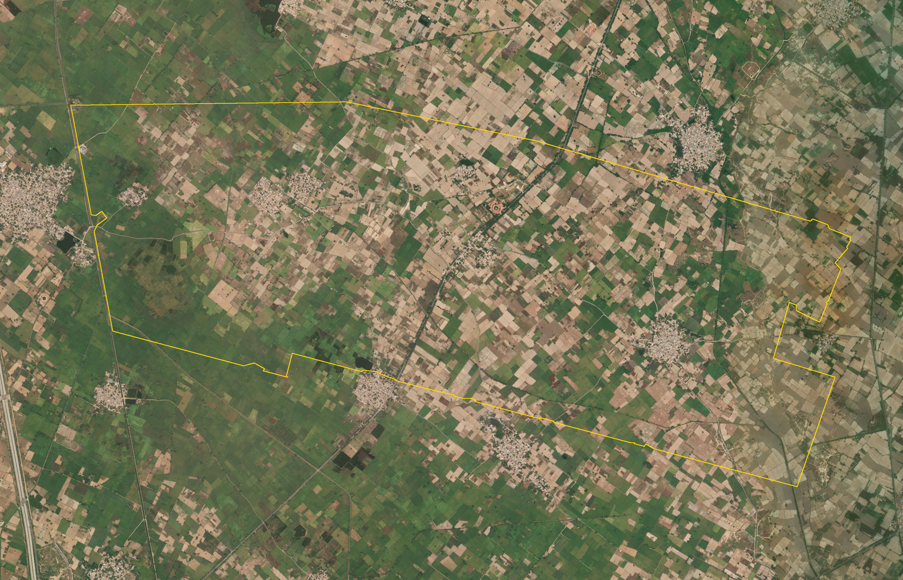

Mach-A-Thon Aeromania '26 · Orbit to Economy: AI in Spacewith Boeing
FlyWithEase
When GPS fails near an airport, flights divert. We make sure there is somewhere ready to go, and that no passenger is stranded.
Track A6
Infrastructure from orbit
Primary · 65 marks
Track C
GPS malfunction detection
Additional · 25 marks
Track B3
Harder-to-jam positioning
Long-term layer
Live demo: rehancodes-web.github.io/Mack.1
The problemTrack A · Problem understanding & economic impact · 20FlyWithEase 02 / 16
GPS fails over India every day.The flights divert. The passengers pay.
2,354
GPS interference incidents reported to Parliament, Nov 2023 – Dec 2025
623
more in just Jan–Feb 2026: the rate is rising
71%
of India's 2025 incidents meant total loss of GPS on board
+500%
GPS spoofing reports, 2024 vs 2023 (IATA)
Delhi, 2025
Approaches to IGI Runway 10 were spoofed. Crews switched to contingency procedures; DGCA introduced real-time spoofing reports.
Interference monitors know where GPS fails, but stop at the map.
Airline ops pick a diversion airport without knowing whether it is built, ready, or in clean airspace.
Passengers get "15 more minutes", missed connections and wrong-city hotels, because recovery starts after the fact.
Sources: Lok Sabha answer, 12 Mar 2026; ICAO Asia-Pacific paper, Jan 2026 (impact shares); IATA; Digital Sansad, 1 Dec 2025. All reported.
Who it servesTrack A · Problem understanding & economic impact · 20FlyWithEase 03 / 16
Four users, four decisions, real money on each.
User
Decision they make
What it costs today
What FlyWithEase gives them
Airline operations
Where to divert when Delhi's GPS degrades
€1,000–77,200 per diverted flight; $98 per block minute
A diversion airport that is built, in clean GPS airspace, with rebooking started early
Infrastructure lenders
Release the next construction tranche, or inspect first
Paying against optimistic progress reports (Jewar: 80% claimed)
Independent progress from orbit: 51% seen. Inspect for $15k instead of risking $112k
Passengers
Wait, rebook, or find a hotel
Hours of uncertainty, missed connections, lost bags
Honest status, a confirmed seat, care at the right airport
DGCA / AAI
Which airports and regions need protection
2,977 incidents since Nov 2023 with no shared live picture
A map of where GPS fails and which airports can absorb traffic
€77,200
top-end cost of one intercontinental diversion
$15k vs $112k
inspection cost vs expected loss, Jewar case (assumed inputs)
₹0
data cost: every satellite source we use is free and public
EUROCONTROL diversion cost (2022 prices); Airlines for America 2025; Lok Sabha 2026; A6 economics use assumed probabilities and costs.
Track A6 · objectiveTrack A · Working demo & objective completion · 10FlyWithEase 04 / 16
Objective 6: monitor construction from orbit.We watched the airport Delhi would divert to.

2019 · farmland
2026 · runway + terminal
Esri World Imagery Wayback (Maxar, Earthstar), ~2 m. Yellow: 1,333 ha airport boundary (OpenStreetMap).
Why Jewar
70 km from Delhi IGI, 1,333 ha greenfield site, phase 1 opened 28 Mar 2026. If Delhi's GPS fails, this is where flights go, so it must really be ready.
The promise vs. the ground
Nov 2021
Foundation stone
Sep 2024
First opening target, missed
Jan 2025
"80% complete"
Mar 2026
Phase 1 inaugurated
Technology · dataTrack A · Technical depth, AI & satellite data · 20FlyWithEase 05 / 16
Seven real datasets, all free and public.
Dataset
Resolution
Volume
What it does for us
Sentinel-2 L2A · ESA Copernicus
10 m, 13 bands
79 monthly scenes
The measurement: land conversion and Larper's inputs, Jan 2020 – Nov 2026
ESA WorldCover 2021
10 m
19,068 labelled px
Training labels for Larper, taken only from land around the airport
Esri World Imagery Wayback
~2 m
13 dated versions
Human-readable before/after; a check on what Larper should see
OpenStreetMap
vector
1 polygon
The 1,333 ha airport boundary used for every measurement
ADS-B Exchange (aircraft NIC)
1° cells
24,579 reports
Track C: where aircraft report degraded GPS
CelesTrak orbital elements
per satellite
GPS, Galileo, NavIC, LEO
The 3D globe and Track B3 geometry
Landsat GLS · NASA/USGS
30 m
1975–2010
Before images for every airport on the globe
Real problems we fixed:a +1,000 DN offset that differs between Sentinel-2 collections (checked against raw pixels) · an 8-month hole in one catalogue, filled from another · cloud masking per pixel, cloudy months reported as gaps, never zero.
Technology · AITrack A · Technical depth, AI & satellite data · 20FlyWithEase 06 / 16
Larper: AI that labels every 10 m of the airport.
Fetch only the airport window from cloud-optimised Sentinel-2 files (no full-tile downloads)
Clean: per-scene scale/offset, cloud and shadow mask from the scene classification layer
Features: 6 bands + NDVI, NDBI, water index, bare-soil index = 10 per pixel
Classify: Random Forest, 20 trees, depth 12, built / bare / vegetation / water
Measure: 12-month median of converted land per month, against a transparent NDVI baseline
Honest validation: trained west of the airport, tested on a separate block of land to the east (10,483 train / 8,585 test pixels). The airport itself is never in training.
built / pavedbarevegetationwater
71%
agreement with WorldCover on unseen land
88%
of built/paved pixels found (recall)
Track A6 · resultTrack A · Working demo & objective completion · 10FlyWithEase 07 / 16
The builder said 80%. Orbit saw half.
Larper AI: converted landNDVI baseline: cleared all year
80%
"work complete", builder, Jan 2025 · reported
41–51%
land converted, Jan 2025 (Larper – baseline) · derived
Two independent methods agree.The Larper AI and a simple NDVI rule both show no change before mid-2023 and a peak in 2025, so the timeline does not depend on one model.
Three checks on the AI
Spatial holdout: tested on land never used in training
Nemotron vision audit: 4 Larper maps compared with the satellite photos (trust: medium)
Human spot-check: blind labelling page; a single hazy 2021 scene was caught and smoothed out
Limits we state
Land conversion is not completion · WorldCover is itself a model (agreement, not ground truth) · 10 m pixels cannot see individual buildings · monsoon months are gaps.
From data to decisionTrack A · Feasibility, accuracy & applicability · 15FlyWithEase 09 / 16
The satellite gap turns into a money decision.
Evidence
P(report optimistic)
Cost if release
Cost if inspect
Decision
No satellite evidence (prior)
0.10
$30,000
$18,000
INSPECT
Satellite: 51% converted vs 80% reported (gap 29 pts)
0.38
$112,500
$26,250
INSPECT
Counterfactual: satellite agrees with report
0.03
$9,000
$15,900
RELEASE
0.056
break-even probability: inspect whenever the chance of an optimistic report is above this
29 pts
gap between claim (80%) and orbit (51%) in Jan 2025
Conditional
Jewar as a diversion airport: built (orbit), but runway certification and ATC need airline confirmation
Inputs assumed for illustration: $300k exposure, $15k inspection, 90% of optimistic reports caught. Interactive sliders on the live Jewar page.
Working demoTrack A · Working demo & objective completion · 10FlyWithEase 10 / 16
Everything here runs live.rehancodes-web.github.io/Mack.1
Jewar monitor: drag 2019 vs 2026, switch to the Larper layer, read the progress curve
Move the sliders: inspection cost and probability; watch the decision flip
GPS malfunction map: 37 red zones, Jewar normal
3D globe: real GPS, Galileo, NavIC and LEO satellites; click any of 4,155 airports
Passenger impact: Nemotron's decisions on four real GPS failures
Aircraft broadcast trust in their own position (NIC); low values in a 1° cell = degraded GPS. Altitude mismatches flag possible spoofing.
Protect critical infrastructure
Feeds the A6 decision: a diversion airport must sit in clean airspace
Protective use only
Areas only; no transmitter hunting, no targeting, no tracking of individual flights
Hotspots: India–Pakistan border and Myanmar. Limit: one day (1 Nov 2026, 72 snapshots); a pilot needs a continuous feed.
AI integration · NVIDIA NemotronTrack A · Technical depth, AI · 20 · Track B/C · Innovation · 10FlyWithEase 12 / 16
Nemotron turns satellite numbers into decisions,and checks its own work.
Job
Model
What it does
Vision audit
super-vl-120b
Compares 4 Larper maps with satellite photos; flags over-called built land
Readiness brief
lightning-30b
Fuses Track C + A6 into a diversion decision: Jewar conditional
Fact-checker
lightning-30b
Second pass checks the brief against the data: pass with fixes, 5 issues found
Ops decisions
lightning-30b
Four real GPS failures: turnaround impact, options, fix
Analyst on site
lightning-30b
Lender memos and "what changed here?" on any place
Nemotron fact-checker, on the brief
"DATA does not mention GPS-denied operations or contingency procedures; this is an operational assumption."
Fix: Remove reference to GPS-denied specifics not in DATA; treat as illustrative assumption.
Guardrails
Answers only from supplied data · structured JSON outputs · every number labelled reported, derived or assumed · human check on every case (we corrected Nemotron on Delhi: ILS was available).